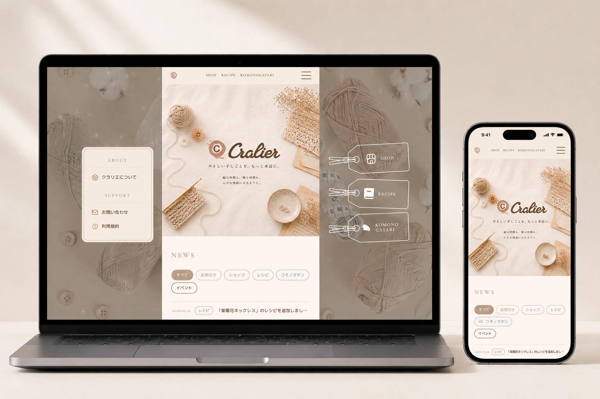
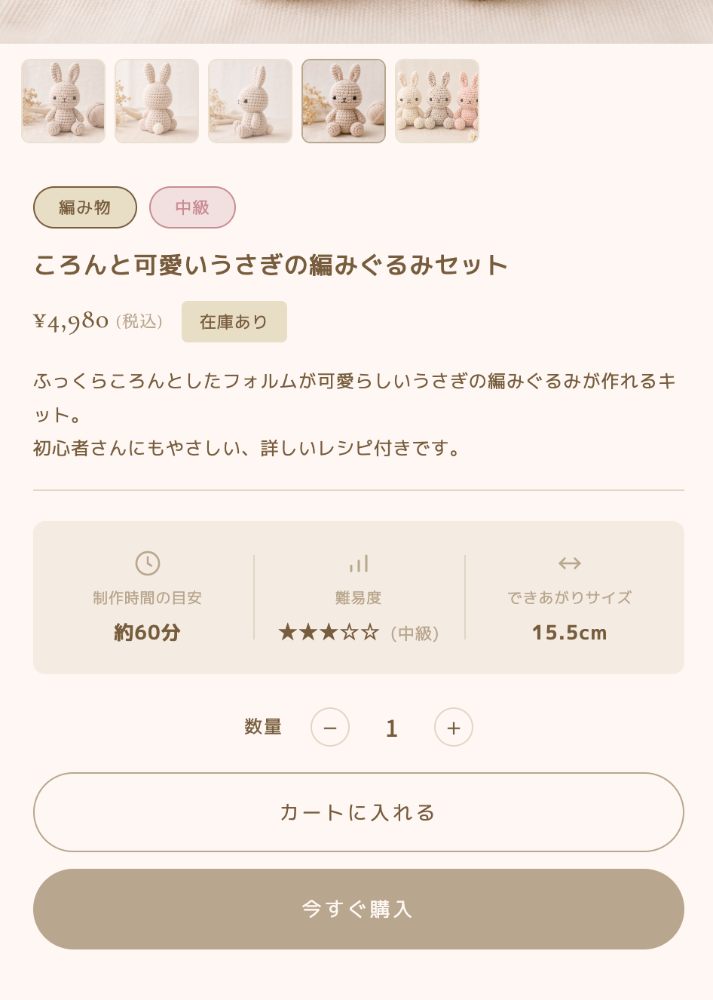
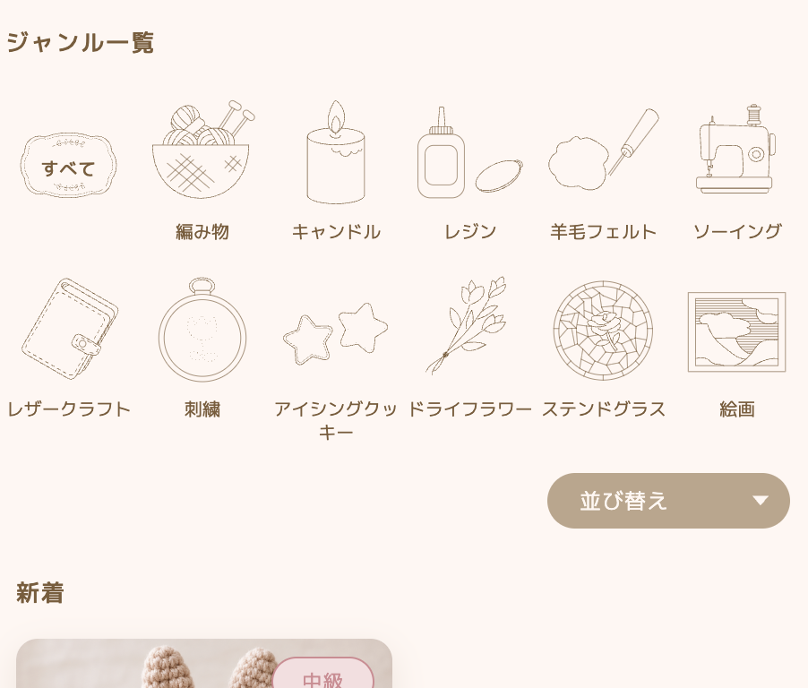

Kana Uchida’s portfolio

Cralier
ハンドメイドが、もっと身近に。作り手と受け手をつなぐコミュニティ型プラットフォーム
制作時間：約1ヶ月
制作範囲：デザイン / ロゴ / イラスト / CMS設計
使用ツール：
使用技術：microCMS / HTML / CSS

ヘッドレスCMS導入の工夫
・ヘッドレスCMS（microCMS）を導入し、クライアント自身で商品・レシピ・コラムを更新可能に
・SHOP / RECIPE / KOMONOGATARI それぞれにAPIスキーマを設計
・運用フローを想定したコンテンツ構造の整理
・ハンドメイド作家でも扱いやすい入力フィールド設計

デザインの工夫
・"Craft × Lier(つなぐ人)" のコンセプトを反映した配色
・茶色とクリーム色で温かみとやさしさを表現
・手描きイラストで人の温度感を演出
・装飾を抑え、ハンドメイド作品が引き立つ構成

案件概要
※ 本作品は実在するクライアント案件として制作したものです。
■サイト名Cralier（クラリエ）
■サイトコンセプト
やさしく、たのしく、もっと身近に。
■サービス内容
ハンドメイドを楽しむすべての人のためのコミュニティ型プラットフォーム
■ターゲット
ハンドメイドを始めたい初心者 〜 作家として活動する作り手まで
■サイト構成
SHOP（商品紹介）
RECIPE（手づくりレシピ）
KOMONOGATARI（小物にまつわる物語コラム）
ABOUT（クラリエについて）
■担当範囲
ロゴデザイン / サイトデザイン / サイト内イラスト / CMS設計
制作意図・工夫した点
■ 課題
ハンドメイド業界の"未成熟さ"を解消するためのプラットフォームとして、
作り手にも受け手にも親しみやすく、ブランドの世界観を一目で伝えられるサイトをつくること
■ 工夫した点
ブランド名「Cralier」の語源（Craft × Lier＝つなぐ人）から世界観を設計し、
配色は温かみのある茶色とクリーム色を基調に、手づくりのやわらかさを演出しました。
手描きのイラストやアイコンを各所に配置することで、
"人の手から生まれるもの" の温度感が自然と伝わる画面づくりを意識しています。
また、SHOP・RECIPE・KOMONOGATARI の3軸を共通のタグ型ナビでまとめ、
ユーザーがどこに行っても迷わない情報設計を心がけました。
■ 苦労した点
3つの異なるコンテンツ（販売・レシピ・読み物）を、ひとつの世界観でまとめ上げる点
■ 解決方法
共通のカラーパレット・タイポグラフィ・タグデザインで統一感を持たせつつ、
各セクションごとに専用アイコンを設けることで個性も両立させました。
さらに、クライアント自身で更新できるようにヘッドレスCMS（microCMS）を導入し、
ブランドの一貫性を保ったまま情報を増やせる運用設計にしています。
使用スキル